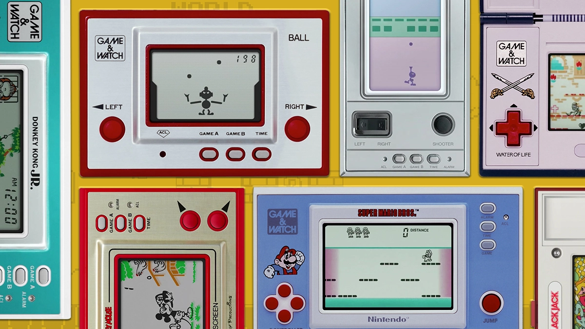
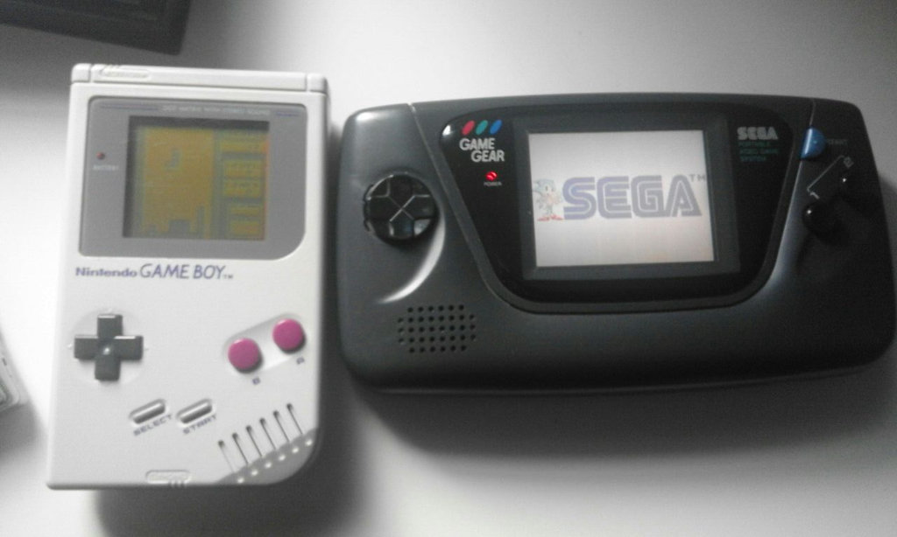
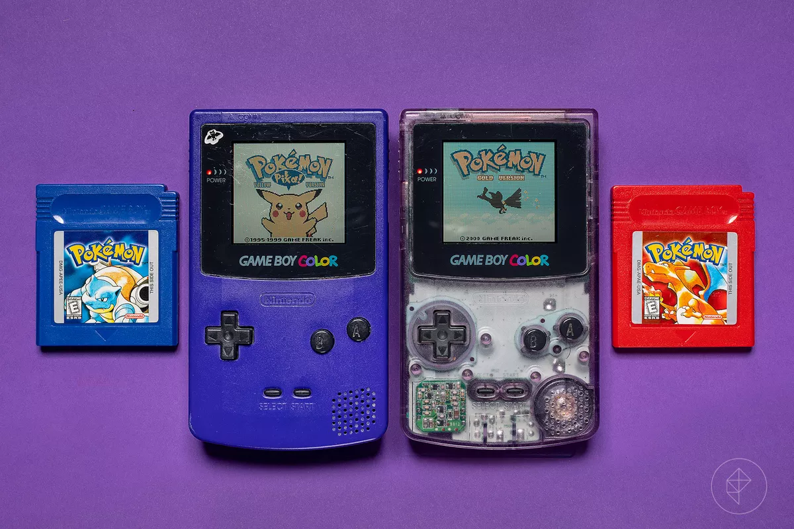
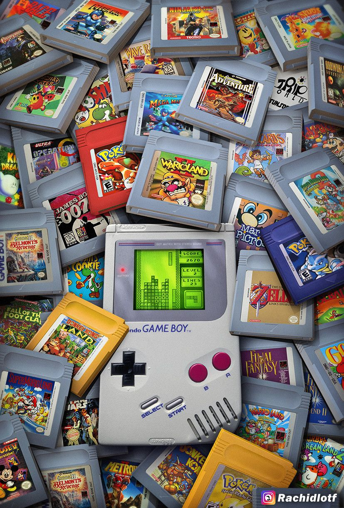

La Nintendo Game Boy.

Los inicios del boom portatil.
Tras el grandisimo exito de las maquinitas de juego "Game & Watch de Nintendo, el mismo equipo desarrollador de estas,
liderado por Gunpai Yokoi, se puso manos a la obra para crear una máquina que reemplazara a estas. Durante varios años
de desarrollo, la Game Boy, tal y como la conocemos, llegó al mercado japones en el año 1989 que, tras un lanzamiento
inicial algo desapercibido, fue tras la salida del juego Tetris cuando la consola despego en ventas y se convirtió en un autentico
fenómeno social en aquella época.
Game Boy, y sus diferentes versiones y rediseños, vendieron un total de 118,69 millones de unidades en todo el mundo siendo la
tercera consola mas vendida de la historia (en el año 2020) y la segunda consola de Nintendo mas vendida por detrás de Nintendo DS.
Las Game & Watch, el origen de todo.
Suficiente potencia para hacernos soñar durante horas.
En comparación con las posteriores rivales de la época, en especial la Game Gear de SEGA, la capacidad técnica de la Game Boy permitía a la consola tener una gran autonomía de casi 15 horas con sus cuatro pilas AA. Esto fue uno de los factores clave que dieron como ganadora a la Game Boy como consola portatil. Cualquier niño podia viajar todas las horas que quisiera jugando a su Game Boy. La Game Gear en cambio, se fulminaba sus seis pilas de bateria en 5 horas!!!.
La SEGA Game Gear junto a la Game Boy.
Aquello que generaba la magia.
Modesta en potencia, no fue un impedimento para hacernos disfrutar de varios de los mejores juegos de la época. Destacaba su pequeña pantalla, sin retroiluminacion, que practicamente obligaba a jugar al lado de una lampara.
Especificaciónes técticas
- CPU: Procesador Sharp x80 de 8 bits (versión personalizada del Z80) trabajando a 4.194304 MHz. El núcleo integra la generación del sonido.
- RAM: 8 kB S-RAM.
- Memoria de Video: 8 kB.
- ROM: Cartuchos basados en PROM con una capacidad desde 256kb hasta 8Mb. Los cartuchos se conectaban a la portátil a través de una cavidad situada en la parte trasera de la videoconsola.
- Pantalla: LCD basado en matriz de puntos de 160 x 144 píxels (2.6 pulgadas). Capaz de generar cuatro tonalidades diferentes de grises.
- Sonido: 4 canales. Solamente dispone de un altavoz pero puede generar sonido estereofónico a través de una salida de auriculares.
- Alimentación: 6V, 7W. Cuatro beterías AA cuya duración estimada por la propia Nintendo es de 35 horas de juego.
- Conectividad:
- Un puerto de conexión para la alimentación situado en la parte izquierda de la videoconsola, el adaptador de corriente se comercializaba aparte junto con un pack de pilas recargables.
- Un puerto serie a través del cual se podían conectar dos consolas con la ayuda de un Cable Link (vendido por separado).
- Controles: La Game Boy Original dispone de la cruceta de ocho direcciones típica de todas las videoconsolas de Nintendo así como de cuatro botones digitales (A,B , START y SELECT). Asimismo dispone de un interruptor situado en la parte de arriba para encenderla y apagarla.
| Hardware | Consolas portátiles | |
|---|---|---|
| Game Boy | Game Gear | |
| CPU | Sharp LR35902 (8-bit) 4.194304 MHz | Zilog Z80 (8-bit) 3.579545 MHz |
| RAM | 8kB | |
| VRAM | 8kB | 16kB |
| Pantalla | 2,56 in | 3,2 in |
| Resolución | 160 x 144 px | |
| Paleta de colores | 4 colores monocromos | 4096 colores |
| Colores en pantalla | 4 colores monocromos | 2 colores |
| Sprites en pantalla | 40 sprites | 60 sprites |
| Tamaño del Sprite | 8x | |
| Sonido | 4 canales | Texas Instruments SN76489 4 canales |
| Bateria | 4 x pilas AA 15 horas | 6 x pilas AA 5 horas |
Si querias verla por dentro, siempre podias hacerte con esta.

Mas pequeña... y hasta con color!!!
La Game Boy sufrió grandes rediseños a lo largo de toda su vida que consiguieron mantener a la Game Boy vigente en un ciclo de vida de casi 14 años (1989-2003). Un total de tres revisiones (uno exclusivo del mercado japonés) vieron la luz hasta la llegada de Game Boy Color que supuso la mayor evolución de la consola hasta la salida de Game Boy Advance, la verdadera sucesora.
- Game Boy original
- Comúnmente llamada "Fat" con objetivo de diferenciarla de los otros modelos. Destacable su pantalla capaz de mostrar únicamente cuatro colores en tono verdoso. Se vendió en España con el eslogan "Eres un fenómeno".
- Game Boy Pocket
- Aparecida en 1997, era una revisión mas pequeña que la original. Sustituia la paleta de cuatro colores verdosa por una grisacea obteniendo una verdadera imagen blanco y negro. Pasó a funcionar con solo dos pilas AA.
- Game Boy Light
- Exclusiva del mercajo japones, este modelo, partiendo de la Pocket, trajo como novedad una pantalla iluminada con luz de fondo parcialmente azulada. Hasta la llegada de Game Boy Avance SP, fue la única portátil de Nintendo con luz.
- Game Boy Color
- El mayor salto que recibió Game boy fue, sin ninguna duda, Game Boy Color. Presentaba pequeños cambios en el hardware siendo, el mas destacable, su pantalla capaz de mostrar hasta 56 colores en pantalla de entre 32.768. Era 100% retrocompatible con todos los juegos de Game Boy original. Algunos juegos solo funcionaban en Game Boy Color, siendo Pokémon Cristal el exclusivo más vendido. Aparecida en 1998, casi 10 años después del modelo original.
Para muchos, fue nuestra primera consola. Un festival de colores en toda regla.
Pero siempre lo más importante, los juegos.
La mayor evolución de Game Boy frente a sus predecesoras, las Game & Watch, fue la posibilidad de cambiar de cartucho y poder disfrutar en una única consola cualquiera de los mas de 1000 juegos que salieron para esta consola. Recordemos que las Game & Watch estaban únicamente pensadas para ejecutar un único juego por maquinita. Las mejores sagas de Nintendo dieron el salto al mundo portatil tras su éxito en NES. Game Boy tuvo juegos fabulosos y estos son los 10 mejor valorados por el público/crítica.
Top 10 juegos de Game Boy.
- Pokémon Oro/Plata (1999, Game Freak)
- Zelda: Link's Awakening (1993, Nintendo)
- Tetris (1989, Bullet Proof Software/Nintendo)
- Super Mario Land 2 (1992, Nintendo)
- Metal Gear Solid (2000, TOSE)
- Donkey Kong (1994, Nintendo)
- Super Mario Land (1989, Nintendo)
- Wario Land 2 (1998, Nintendo)
- Zelda: Oracle of Ages/Seasons (2001, Flagship)
- Mario Tennis (2000, Camelot)
Mario Land, Zelda, Metroid ... miles de cartuchos para elegir.
Pero... ¿y los más vendidos?
El éxito de Game Boy no solo fue exclusivo de la consola. Un total de 53 juegos superaron el millos de copias vendidas en todo el mundo.
Puedes consultar la lista de juegos mas vendidos de Game Boy en este enlace.
Todos los juegos fueron clave en el éxito de la consola pero hubo una saga en específico que rejuvenecería el ciclo de vida de la consola.
La saga "Pocket Monsters" en Japón, o mundialmente Pokémon, aparecidos en 1996, Pokemon Edición Roja y Pokemon Edición Azul
llegarón a ser los videojuegos más vendidos de la consola con unas ventas registradas de 31,38 millones de cartuchos. "Pokémon"
se convirtió en un auténtico fenómeno mundial, vigente a dia de hoy siendo, en la actualidad, la saga más importante en videoconsolas
portátiles de Nintendo.
La primera generación de Pokémon conquistó el corazón de millones de niños en aquella época.